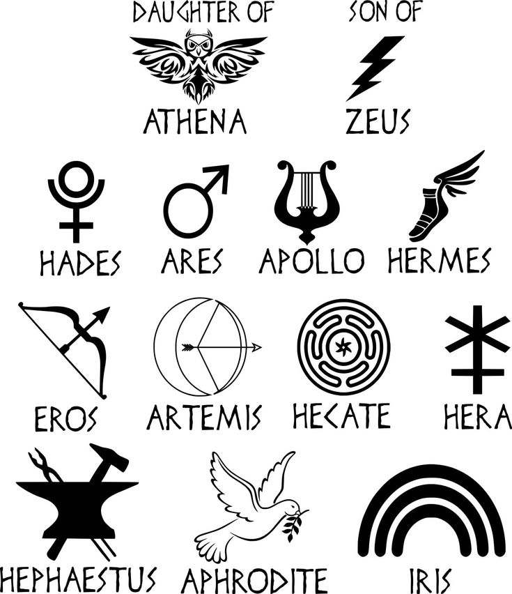

Символы богов и их атрибуты

Символы богов и их атрибуты: Священный язык Олимпа.
В лучах заката, окрашивающих мраморные храмы в золотистые тона, древние греки видели отблески божественного. Каждый олимпийский бог говорил с миром через свои символы — священные атрибуты, ставшие вечными архетипами западной культуры.
Зевс, восседающий на троне из облаков, сжимал в могучей длани молнию — не просто оружие, а воплощение небесного правосудия. Когда раздавался громовый раскат, эллины понимали: Отец богов изрекает свою волю. Его священный орел, парящий между миром смертных и обителью богов, символизировал всевидящее око и божественное покровительство. В Дельфах жрецы внимали шелесту дубовых листьев — дерева, посвященного Громовержцу.
Афина Парфенос являлась смертным в сияющих доспехах, ее эгида с головой Медузы обращала врагов в камень. Мудрую богиню сопровождала сова — ночная птица, чей пронзительный взор видел сквозь тьму невежества. Оливковое дерево, дарованное ею Афинам, стало символом мира и мудрого правления.
У берегов бурного моря Посейдон ударял трезубцем о скалы, вызывая штормы или, напротив, успокаивая волны. Его священные кони, рожденные из пены морской, олицетворяли неукротимую стихию. В то время как Аид в своем подземном царстве держал кипарисовый скипетр — дерево, высаживаемое на греческих кладбищах до наших дней.
В древнегреческой мифологии боги не просто управляли стихиями и судьбами людей — они являли свою сущность через священные символы и атрибуты. Каждый предмет, животное или растение, связанное с божеством, было не случайным, а глубоко символичным, отражающим их власть, характер и сферу влияния. Эти символы служили мостом между миром людей и Олимпом, а также ключом к пониманию божественной природы.
Зевс (Ζεύς) – Громовержец и Царь Богов.
Символы:
Молния – главный атрибут Зевса, воплощающий его абсолютную власть над небом и землей. Удар молнии считался божественным знамением, а сам символ ассоциировался с неотвратимым наказанием и справедливостью.
Орел – царь птиц, посланник Зевса, олицетворяющий его всевидящее око и высшую власть. Орел часто изображался несущим молнии в когтях.
Дуб – священное дерево Зевса, символ нерушимой силы. В Додоне находился древний оракул, где жрецы толковали шелест дубовых листьев.
Скипетр – знак верховной власти, часто украшенный орлом.
Громовой камень (керавнобол) – мифический артефакт, которым Зевс поражал врагов.
Значение:
Зевс – не просто бог грома, но и гарант миропорядка. Его символы подчеркивают непререкаемую власть, закон и карающую справедливость.
Посейдон (Ποσειδῶν) – Повелитель Морей
Символы:
Трезубец – самый известный атрибут, способный вызывать бури, землетрясения и новые источники. Символизирует три стихии: море, землю и пресные воды.
Дельфины – проводники Посейдона, олицетворяющие благую сторону моря.
Кони – морские кони (гиппокампы), впряженные в его колесницу, связывают его с мифическими водными существами.
Волна – постоянный мотив в изображениях бога, означающий неукротимую мощь океана.
Значение:
Посейдон – не только даритель спокойных вод, но и грозный разрушитель. Его трезубец – символ неконтролируемой природной силы, перед которой бессильны даже боги.
Аид (ᾍδης) – Владыка Подземного Царства
Символы:
Шлем-невидимка (кина) – дар циклопов, делающий носителя невидимым. Использовался Аидом в битвах и Персеем против Медузы.
Кипарис – дерево смерти, растущее у входа в Аид.
Черные кони – запряжены в его колесницу, символизируя мрак загробного мира.
Ключ от Аида – знак того, что души, попавшие в подземное царство, не могут вернуться.
Цербер – трехглавый пес, охраняющий врата между мирами.
Значение:
Аид – не злой бог, но неумолимый и справедливый. Его символы напоминают о неизбежности смерти и тайнах потустороннего мира.
Афина (Ἀθηνᾶ) – Богиня Мудрости и Войны
Символы:
Сова – птица мудрости, видящая во тьме (отсюда выражение «сова Минервы»).
Эгида – щит с головой Медузы, обращающий врагов в камень.
Оливковое дерево – дар Афины городу Афинам, символ мира и процветания.
Копье и шлем – атрибуты Афины-воительницы.
Змея – символ перерождения и мудрости (часто изображалась у ее ног).
Значение:
Афина сочетает стратегический ум и воинскую доблесть. Ее символы отражают баланс между силой и мудростью.
Аполлон (Ἀπόλλων) – Бог Света, Искусств и Пророчеств
Символы:
Лира – инструмент, подаренный Гермесом, символ гармонии и поэзии.
Лавровый венок – знак победы и чистоты (в память о нимфе Дафне).
Солнечные лучи – Аполлон как бог света часто изображается с сияющим нимбом.
Лук и стрелы – оружие, которым он насылал чуму или исцелял.
Треножник Дельфийского оракула – символ пророческого дара.
Значение:
Аполлон – воплощение красоты, порядка и творческого вдохновения. Его атрибуты подчеркивают связь между искусством и божественным откровением.
Афродита (Ἀφροδίτη) – Богиня Любви и Красоты
Символы:
Роза – цветок страсти, выросший из крови Адониса.
Зеркало – отражение вечной молодости и самолюбования.
Голубь – птица мира и любовных посланий.
Пояс (кестос) – волшебный предмет, делающий носителя неотразимым.
Морская раковина – напоминание о ее рождении из пены морской.
Значение:
Афродита – не просто покровительница любви, но и сила, перед которой бессильны даже боги. Ее символы говорят о красоте, желании и иллюзиях.